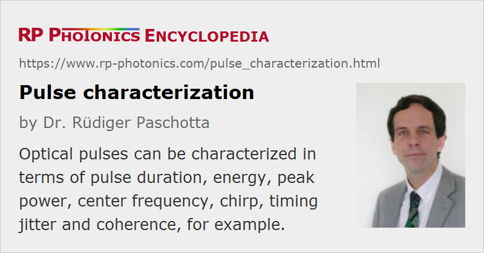

Pulse Characterization
Definition: the measurement of various properties of an optical pulse
More specific terms: pulse duration measurement, carrier–envelope frequency measurement
German: Pulscharakterisierung, Pulsvermessung
Categories: light detection and characterization, optical metrology, light pulses
How to cite the article; suggest additional literature
Author: Dr. Rüdiger Paschotta
Optical pulses and regular optical pulse trains can be characterized in various respects:
- The pulse repetition rate is usually measured with a fast photodiode and an electronic spectrum analyzer.
- The pulse duration can be measured with various methods, e.g. with an autocorrelator or a streak camera. Optical sampling techniques can be used when a shorter reference pulse is available.
- The pulse energy may be measured directly or (for pulse trains) calculated from the average power and repetition rate.
- The peak power may be directly measured with a photodiode or calculated from pulse energy, pulse duration and pulse shape.
- The optical center frequency and spectral shape can be obtained with an optical spectrum analyzer.
- The carrier–envelope offset frequency is of special interest in optical metrology, and may be measured with an f−2f interferometer.
- The chirp can be measured e.g. with frequency-resolved optical gating.
- The timing jitter of a pulse train can be measured with various methods.
- The coherence (e.g. of subsequent pulses) can be characterized e.g. with an interferometer.
There are methods of complete pulse characterization [5], which reveal the electric field versus time or the complex spectrum (including spectral shape and spectral phase) of ultrashort pulses. The most prominent techniques for this purpose are FROG (frequency-resolved optical gating [2]) and SPIDER (spectral phase interferometry for direct electric-field reconstruction [8], → spectral phase interferometry). The results can be visualized in various ways, e.g. with graphs of time- or frequency-dependent functions, or with spectrograms.
Note that apart from the temporal aspect, there is also the spatial aspect [15]. Both aspects are often approximately separated in the sense that the whole spatio-temporal profile of the electric field of a pulse can be specified as the product of two functions, one depending only on time and the other only on the spatial position. However, a significant coupling of temporal and spatial properties can occur in various situations. For example, pulses from Kerr lens mode-locked lasers often exhibit a time-dependent beam radius, which makes the complete characterization (and modeling) very challenging. Another spatio-temporal aspect is pulse front tilt, which is related to angular dispersion and can, e.g., result from a misaligned pulse compressor.
Applications
Accurate and reliable pulse characterization is essential for many applications. For example, if an ultrafast laser system does not work properly, e.g., due to misalignment of components, this can greatly affect the operation of a larger system. The problem can be located and fixed only if the pulse properties can be monitored.
Particularly careful pulse characterization may be required in the laser development, where various effects on the pulse formation need to be investigated.
Suppliers
The RP Photonics Buyer's Guide contains 30 suppliers for pulse characterization instruments. Among them:
Questions and Comments from Users
Here you can submit questions and comments. As far as they get accepted by the author, they will appear above this paragraph together with the author’s answer. The author will decide on acceptance based on certain criteria. Essentially, the issue must be of sufficiently broad interest.
Please do not enter personal data here; we would otherwise delete it soon. (See also our privacy declaration.) If you wish to receive personal feedback or consultancy from the author, please contact him e.g. via e-mail.
By submitting the information, you give your consent to the potential publication of your inputs on our website according to our rules. (If you later retract your consent, we will delete those inputs.) As your inputs are first reviewed by the author, they may be published with some delay.
Bibliography
| [1] | C. Yan and J. C. M. Diels, “Amplitude and phase recording of ultrashort pulses”, J. Opt. Soc. Am. B 8 (6), 1259 (1991), doi:10.1364/JOSAB.8.001259 |
| [2] | D. J. Kane and R. Trebino, “Characterization of arbitrary femtosecond pulses using frequency-resolved optical gating”, IEEE J. Quantum Electron. 29 (2), 571 (1993), doi:10.1109/3.199311 |
| [3] | D. J. Kane and R. Trebino, “Single-shot measurement of the intensity and phase of an arbitrary ultrashort pulse by using frequency-resolved optical gating”, Opt. Lett. 18 (10), 823 (1993), doi:10.1364/OL.18.000823 |
| [4] | K. C. Chu et al., “Direct measurement of the spectral phase of femtosecond pulses”, Opt. Lett. 20 (8), 904 (1995), doi:10.1364/OL.20.000904 |
| [5] | I. A. Walmsley and V. Wong, “Characterization of the electric field of ultrashort optical pulses”, J. Opt. Soc. Am. B 13 (11), 2453 (1996), doi:10.1364/JOSAB.13.002453 |
| [6] | I. D. Jung et al., “High-dynamic-range characterization of ultrashort pulses”, Appl. Phys. B 65, 307 (1997), doi:10.1007/s003400050277 |
| [7] | R. Trebino et al., “Measuring ultrashort laser pulses in the time–frequency domain using frequency-resolved optical gating”, Rev. Sci. Instrum. 68, 3277 (1997), doi:10.1063/1.1148286 |
| [8] | C. Iaconis and I. A. Walmsley, “Spectral phase interferometry for direct electric-field reconstruction of ultrashort optical pulses”, Opt. Lett. 23 (10), 792 (1998), doi:10.1364/OL.23.000792 |
| [9] | L. Gallmann et al., “Characterization of sub-6-fs optical pulses with spectral phase interferometry for direct electric-field reconstruction”, Opt. Lett. 24 (18), 1314 (1999), doi:10.1364/OL.24.001314 |
| [10] | L. Gallmann et al., “Techniques for the characterization of sub-10-fs optical pulses: a comparison”, Appl. Phys. B 70, S67 (2000), doi:10.1007/s003400000307 |
| [11] | L. Gallmann et al., “Spatially resolved amplitude and phase characterization of femtosecond optical pulses”, Opt. Lett. 26 (2), 96 (2001), doi:10.1364/OL.26.000096 |
| [12] | J. W. Nicholson and W. Rudolph, “Noise sensitivity and accuracy of femtosecond pulse retrieval by phase and intensity from correlation and spectrum only (PICASO)”, J. Opt. Soc. Am. B 19 (2), 330 (2002), doi:10.1364/JOSAB.19.000330 |
| [13] | T. Hirayama and M. Sheik-Bahae, “Real-time chirp diagnostic for ultrashort laser pulses”, Opt. Lett. 27 (10), 860 (2002), doi:10.1364/OL.27.000860 |
| [14] | E. M. Kosik et al., “Interferometric technique for measuring broadband ultrashort pulses at the sampling limit”, Opt. Lett. 30 (3), 326 (2005), doi:10.1364/OL.30.000326 |
| [15] | S. Akturk et al., “The general theory of first-order spatio-temporal distortions of Gaussian pulses and beams”, Opt. Express 13 (21), 8642 (2005), doi:10.1364/OPEX.13.008642 |
| [16] | A. S. Wyatt et al., “Sub-10 fs pulse characterization using spatially encoded arrangement for spectral phase interferometry for direct electric field reconstruction”, Opt. Lett. 31 (12), 1914 (2006), doi:10.1364/OL.31.001914 |
| [17] | C. Dorrer, “High-speed measurements for optical telecommunication systems”, J. Sel. Top. Quantum Electron. 12 (4), 843 (2006), doi:10.1109/JSTQE.2006.876304 |
| [18] | P. K. Bates et al., “Ultrashort pulse characterization in the mid-infrared”, Opt. Lett. 35 (9), 1377 (2010), doi:10.1364/OL.35.001377 |
| [19] | M. Chini et al., “Characterizing ultrabroadband attosecond lasers”, Opt. Express 18 (12), 13006 (2010), doi:10.1364/OE.18.013006 |
| [20] | M. Miranda et al., “Simultaneous compression and characterization of ultrashort laser pulses using chirped mirrors and glass wedges”, Opt. Express 20 (1), 688 (2012), doi:10.1364/OE.20.000688 |
| [21] | M. Rhodes et al., “Pulse-shape instabilities and their measurement”, Laser Photon. Rev. 7, 557 (2013), doi:10.1002/lpor.201200102 |
| [22] | M. Rhodes et al., “Standards for ultrashort-laser-pulse-measurement techniques and their consideration for self-reference spectral interferometry”, Appl. Opt. 53, D1 (2014), doi:10.1364/AO.53.0000D1 |
| [23] | G. Pariente et al., “Space–time characterization of ultra-intense femtosecond laser beams”, Nature Photonics 10, 547 (2016), doi:10.1038/nphoton.2016.140 |
| [24] | M. Miranda et al., “Fast iterative retrieval algorithm for ultrashort pulse characterization using dispersion scans”, J. Opt. Soc. Am. B 34 (1), 190 (2017), doi:10.1364/JOSAB.34.000190 |
| [25] | M. Miranda et al., “All-optical measurement of the complete waveform of octave-spanning ultrashort light pulses”, Opt. Lett. 44 (2), 191 (2019), doi:10.1364/OL.44.000191 |
See also: pulses, spectral phase, carrier–envelope offset, autocorrelators, frequency-resolved optical gating, spectral phase interferometry, streak cameras
and other articles in the categories light detection and characterization, optical metrology, light pulses
|  |
If you like this page, please share the link with your friends and colleagues, e.g. via social media:
These sharing buttons are implemented in a privacy-friendly way!